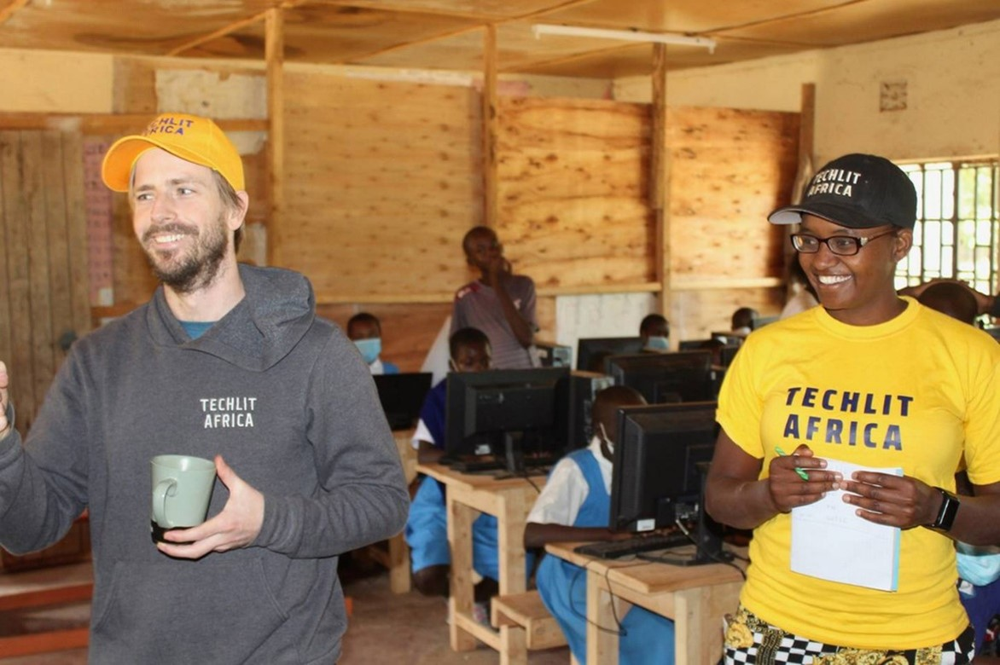
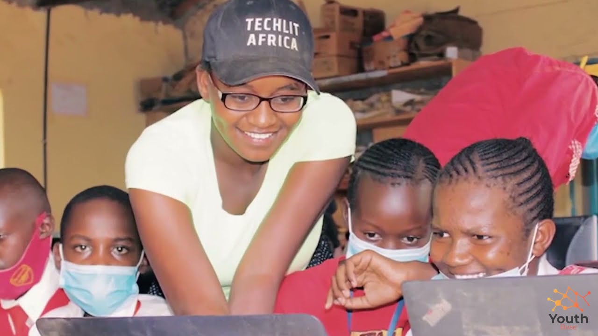
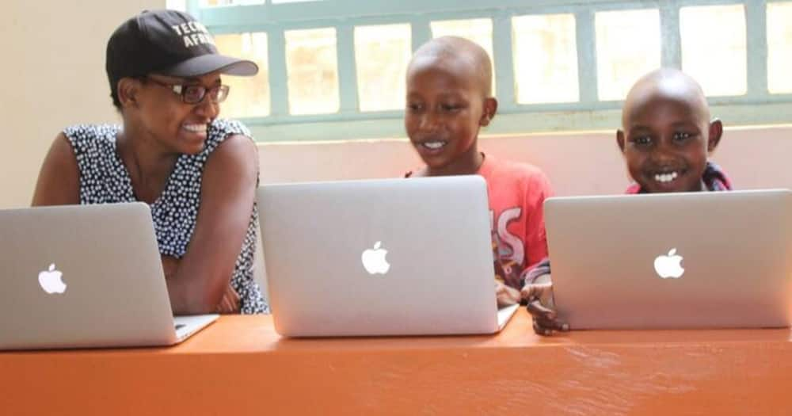
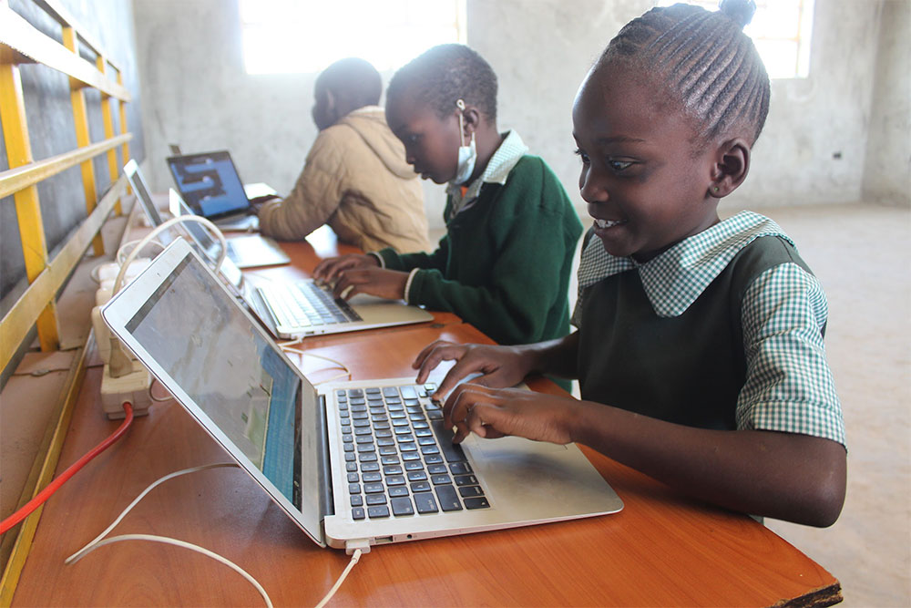

Out in the blistering heat of rural Africa a small girl who looked to be about nine was struggling to pick some wild
vegetables on the side of the road. This food was on her way to and from school. It was her and her family's only food
for the day, all the vegetables were small and shriveled things that could barely feed the girl who picked them. But she
happily walked back to her home expecting a great meal that night from the great haul of food. This poor girl was taking
care of her family at the age of nine.
Augustana College. (2022, February 24). Teaching tech literacy to change children's lives. Augustana College. Retrieved September 15, 2022, from https://www.augustana.edu/about-us/news/teaching-tech-literacy-change-childrens-lives
Cheboi, N. (2022, August 1). Meet Founder & CEO Nelly Cheboi. TechLit Africa. Retrieved September 15, 2022, from https://techlitafrica.org/team/members/nelly-cheboi
Kamer, L. (2022, August 1). • Africa: internet penetration 2021. Statista. Retrieved September 16, 2022, from https://www.statista.com/statistics/1176654/internet-penetration-rate-africa-compared-to-global-average/
Lusigi, A. (2019). Higher Education, Technology, and Equity in Africa. New Review of Information Networking, 24(1), 1-16. https://doi.org/10.1080/13614576.2019.1608576
Torgan, A. (2022, July 14). This CNN Hero upcycles old computers to open new worlds for young Kenyans. CNN. Retrieved September 15, 2022, from https://www.cnn.com/2022/07/14/world/education-technology-recycling-kenya-poverty-cnnheroes/index.html
Walters, L. (2021, October 18). Study Finds Internet Economy Grew Seven Times Faster Than Total U.S. Economy, Created Over 7 Million Jobs in the Last Four Years. IAB. Retrieved September 16, 2022, from https://www.iab.com/news/study-finds-internet-economy-grew-seven-times-faster/